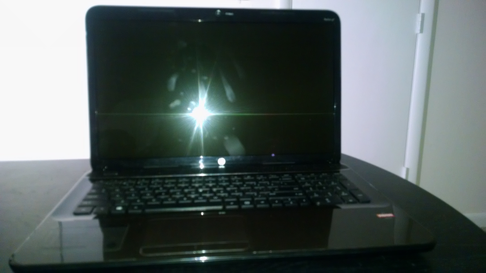

1. Needed. You will have to determine what screen to purphase according to your existing laptop's specifications I found the screen I needed doing a simple google search. You will also need a torx screw driver an exacto knife a pair of metal tweezers just in case a screw gets stuck.

2. Remove Plastic Bezil. You will need to remove the battery before beginning to work on the laptop.THen you will need to use your exacto knife to remove the plastic bezil covering the screws near the bottom of the screen.

3. Remove old screen. Begin removing the screws under the bezil. Then begin removing the screen by gently lifting the plastic edges of the computer's screen. After the plastic is removed, unscrew the side screws from the screen. Then tilt your screen down onto your keyboard. IF you have an LED screen you will see one connector. Carefully unplug this connector to fully remove your screen.
4. Reverse your Steps. To put your screen back together, simply reverse the steps you took to remove the screen.
Home Page | How to Change my Computer's Harddrive | How to Fry Plantains